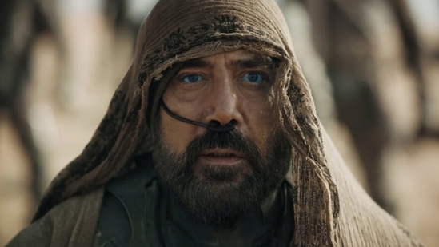

Paul Atreides, Usul, Lisan al-Gaib, Kwisatz Haderach, The Preacher
Timothée Chalamet
Paul is the only son and heir of Duke Leto of House Atreides and his concubine Lady Jessica. After surviving betrayal, Paul embraces the Fremen way of life on Arrakis, adopting the name Muad’Dib from a desert mouse. With prescient abilities and unmatched leadership, he leads the Fremen in rebellion against the Harkonnens and the Emperor. He is the prophesied Kwisatz Haderach, a male Bene Gesserit. Muad'dib reshapes the galaxy, seizing control of spice production and the Imperium. His rise brings both triumph and tragedy, as he struggles with destiny, power, and the far-reaching consequences of his rule.
Chani
Zendaya
Chani is a fierce Fremen warrior and Paul’s lover. She is the daughter of Liet-Kynes, the Imperial Planetologist. She becomes mother to Paul's children. Skilled in combat and survival, she plays a crucial role in Paul’s rise to power, while remaining wary of the prophecy surrounding him.
Lady Jessica
Rebecca Ferguson
Lady Jessica, a Bene Gesserit adept and concubine of Duke Leto Atreides, is Paul Atreides’ mother. Defying the Bene Gesserit by bearing a son, she guides Paul in politics and the Bene Gesserit Way. After Duke Leto’s fall, she finds power among the Fremen as their Reverend Mother.
Stilgar

Javier Bardem
Stilgar is a wise and formidable leader of the Fremen, commanding deep respect among his people. A skilled warrior and strategist, he becomes a mentor and ally to Paul, guiding him in the ways of the desert. Fiercely loyal, he plays a crucial role in the Fremen uprising and the transformation of their world.
Baron Harkonnen
Stellan Skarsgård
Baron Vladimir Harkonnen is the cruel and ruthless leader of the planet Geidi Prime and previous ruler of Arrakis. Obese yet deceptively agile with suspensors, he orchestrates the downfall of House Atreides through deceit. A master of political intrigue, he exploits wealth and fear to maintain power.